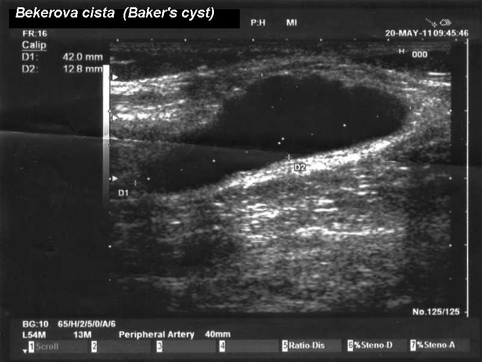

Ficha del catálogo
Quiste poplíteo (quiste de Baker)
- Sistema
- Óseo
- Modalidad
- US
- Región
- Rodilla
- Dificultad
- Básico
El quiste poplíteo es una distensión de la bolsa situada entre el tendón del semimembranoso y la cabeza medial del gastrocnemio, que comunica con la articulación de la rodilla. Aparece como consecuencia de cualquier proceso que produzca derrame articular, sobre todo artrosis y lesiones meniscales en el adulto. Se manifiesta como una tumefacción posteromedial que aumenta con la extensión. Cuando se rompe provoca dolor y edema en la pantorrilla que imitan una trombosis venosa profunda.
Técnica
Ecografía con sonda lineal sobre el hueco poplíteo, con el paciente en decúbito prono y la rodilla en extensión, buscando el cuello del quiste entre las dos estructuras que lo delimitan.
Qué observar
- Colección anecoica de contorno bien definido en la región posteromedial
- Cuello que se introduce entre el tendón del semimembranoso y el gastrocnemio medial
- Refuerzo acústico posterior y ausencia de flujo en el estudio Doppler
- Contenido ecogénico o tabiques por hemorragia o inflamación crónica
- Cuerpos libres intraquísticos en pacientes con artropatía
- Prolongación distal con líquido entre los planos musculares en caso de rotura
Hallazgos
Colección anecoica con cuello característico entre el semimembranoso y la cabeza medial del gastrocnemio, sin flujo interno y con refuerzo posterior.
Perlas
La identificación del cuello del quiste entre esas dos estructuras es lo que confirma el diagnóstico y lo distingue de cualquier otra colección poplítea. Ante dolor y edema de pantorrilla conviene explorar también el sistema venoso profundo porque un quiste roto y una trombosis pueden coexistir.
Diagnóstico diferencial
- Aneurisma de la arteria poplítea
- Estructura pulsátil con flujo en el estudio Doppler.
- Trombosis venosa profunda
- Vena no compresible con contenido ecogénico dentro de la luz.
- Tumor de partes blandas
- Contenido sólido con vascularización interna y sin cuello articular.
Simuladores
- Vena poplítea dilatada vista en corte transversal
- Bursa semimembranosa aislada
- Ganglión de la articulación tibioperonea proximal
Por modalidad
- US
- Método de elección por rapidez, disponibilidad y capacidad de comparar con el sistema venoso
- RM
- Confirma el diagnóstico y estudia la causa intraarticular del derrame
- RX
- Solo útil para valorar la artropatía subyacente
Protocolo
Ecografía del hueco poplíteo con sonda lineal y estudio Doppler, ampliado a la pantorrilla si hay sospecha de rotura o de trombosis.
Clasificación
Errores frecuentes
- Diagnosticar quiste sin identificar el cuello característico
- No explorar el sistema venoso en un paciente con dolor de pantorrilla
- Olvidar buscar la causa intraarticular del derrame que originó el quiste

rodilla quiste popliteo quiste de baker semimembranoso gastrocnemio ecografia trombosis venosa